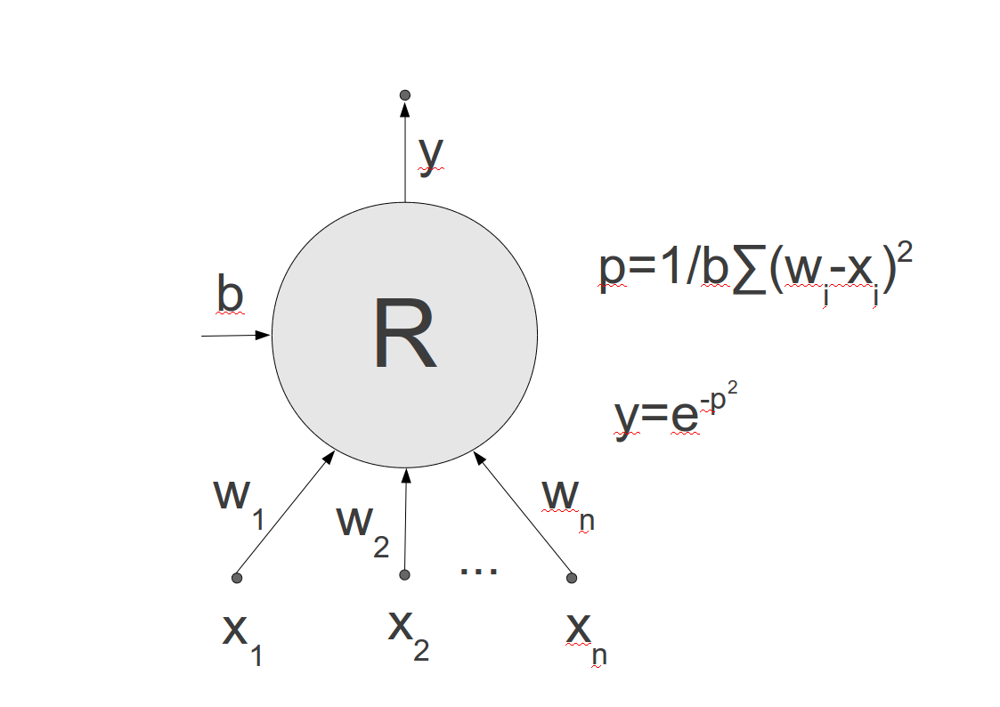
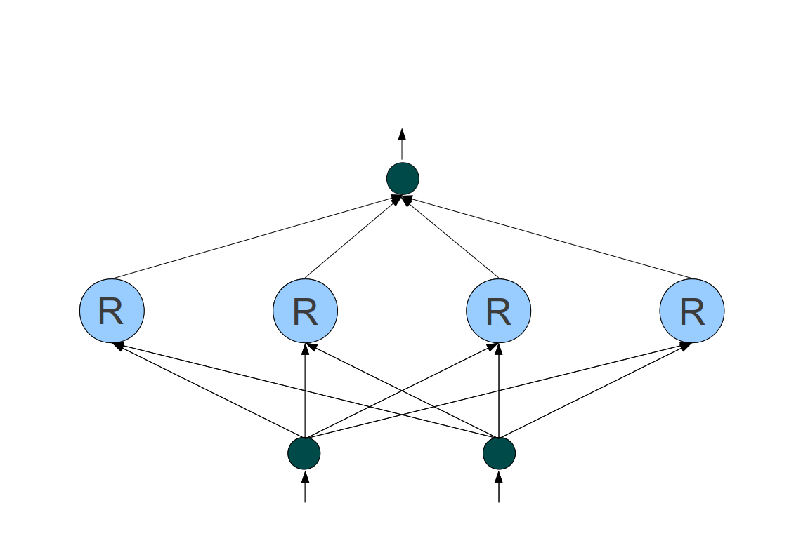

Radiální sítě jsou typem modelu neuronové sítě, která využívá jen jednu vrstvu jednotek (jako v případě jednovrstvého perceptronu), ale tyto jednotky jsou zcela jiného typu než perceptron. Jednotka v radiální sítí má – stejně jako perceptron – několik vstupů, jeden výstup a několik svých vnitřních parametrů (vah), které se učením mění, ale tady podobnost končí. Parametry radiálních jednotek mají jiný význam a funkce počítaná jednotkou je velmi odlišná od perceptronu. Radiální jednotka namísto vážené sumy vstupů s vahami a odečtení prahů počítá vzdálenost vstupu od pomyslného středu. Tím se spočte potenciál jednotky, ze kterého se pak počítá výstup. Zde se místo sigmoidální funkce perceptronu počítá Gaussova funkce.
Celá síť je potom složena s jedné vrstvy radiálních jednotek, jejichž výstupy jsou ve výstupní vrstvě (která má jednu jednotku) zkombinovány lineární kombinací. Učícím algoritmem radiálních sítí může být algoritmus zpětného šíření chyby, který zda má samozřejmě jiný tvar výpočtů, ale princip učení s učitelem a derivování chyby je stejný. Geometrická odlišnost radiálních sítí umožňuje i další způsoby učení, ale jejich popis by přesáhl rámec tohoto textu.
|  |  |
| Schéma radiální jednotky s Gaussovou funkcí | Radiální síť s jednou vrstvou 4 radiálních jednotek |